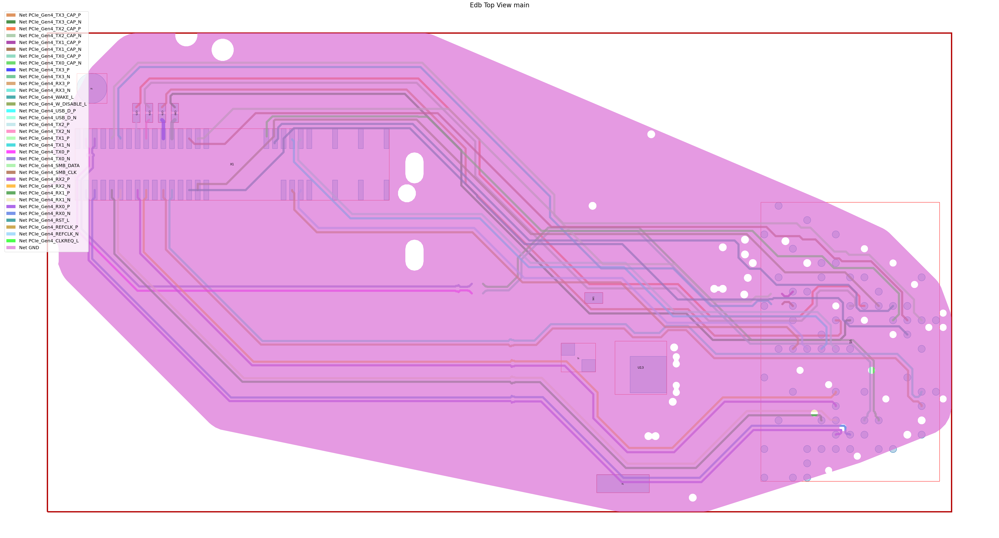

Download this example
Download this example as a Jupyter Notebook or as a Python script.
EDB: IPC2581 export#
This example shows how you can use PyAEDT to export an IPC2581 file.
Perform required imports, which includes importing a section.
[1]:
import os
import tempfile
import time
import pyedb
from pyedb.generic.general_methods import generate_unique_name
from pyedb.misc.downloads import download_file
Download the AEDB file and copy it in the temporary folder.#
[2]:
temp_dir = tempfile.TemporaryDirectory(suffix=".ansys")
targetfile = download_file("pyaedt/edb/ANSYS-HSD_V1.aedb", destination=temp_dir.name)
ipc2581_file_name = os.path.join(temp_dir.name, "Ansys_Hsd.xml")
print(targetfile)
C:\Users\ansys\AppData\Local\Temp\tmpnjcbubby.ansys\pyaedt\edb\ANSYS-HSD_V1.aedb
Launch EDB#
Launch the pyedb.Edb class, using EDB 2023. > Note that length dimensions passed to EDB are in SI units.
[3]:
# Select EDB version (change it manually if needed, e.g. "2025.1")
AEDT_VERSION = "2026.1"
edb = pyedb.Edb(edbpath=targetfile, version=AEDT_VERSION)
PyEDB INFO: gRPC mode enabled.
PyEDB INFO: Logger is initialized in EDB.
PyEDB INFO: legacy v0.77.0
PyEDB INFO: Python version 3.10.11 (tags/v3.10.11:7d4cc5a, Apr 5 2023, 00:38:17) [MSC v.1929 64 bit (AMD64)]
PyEDB INFO: Using PyEDB with gRPC as Beta until ANSYS 2027R1 official release.
PyEDB INFO: Logger is initialized in EDB.
PyEDB INFO: legacy v0.77.0
PyEDB INFO: Python version 3.10.11 (tags/v3.10.11:7d4cc5a, Apr 5 2023, 00:38:17) [MSC v.1929 64 bit (AMD64)]
PyEDB INFO: Grpc session started
PyEDB INFO: Grpc session started: pid=1788
PyEDB INFO: RPC session acquired (open databases: 1)
PyEDB INFO: Database ANSYS-HSD_V1.aedb Opened in 2026.1
PyEDB INFO: Cell main Opened
PyEDB INFO: Refreshing the Components dictionary.
PyEDB INFO: Builder was initialized.
PyEDB INFO: EDB initialized.
Parametrize the width of a trace.#
[4]:
edb.modeler.parametrize_trace_width("A0_N", parameter_name=generate_unique_name("Par"), variable_value="0.4321mm")
C:\actions-runner\_work\pyaedt-examples\pyaedt-examples\.venv\lib\site-packages\pyedb\grpc\database\modeler.py:927: FutureWarning: Accessing deprecated property paths. use layout.paths property instead.
for p in self.paths:
[4]:
True
Create a cutout and plot it.#
[5]:
signal_list = []
for net in edb.nets.netlist:
if "PCIe" in net:
signal_list.append(net)
power_list = ["GND"]
edb.cutout(
signal_nets=signal_list,
reference_nets=power_list,
extent_type="ConvexHull",
expansion_size=0.002,
use_round_corner=False,
number_of_threads=4,
remove_single_pin_components=True,
use_pyaedt_extent_computing=True,
extent_defeature=0,
)
edb.nets.plot(None, None, color_by_net=True)
PyEDB INFO: -----------------------------------------
PyEDB INFO: Trying cutout with 2.0mm expansion size
PyEDB INFO: -----------------------------------------
PyEDB INFO: GRPC cut-out started
PyEDB INFO: [READ] Data collection finished in 1.774 s
PyEDB INFO: Nets:348, padstack_instances:5699, primitives:2107, components:509
PyEDB INFO: [EXTENT] Polygon created in 1.441 s
PyEDB INFO: [COMPUTE] Decision lists ready in 22.033 s
PyEDB INFO: Starting single write-pass
PyEDB INFO: Deleting 313 nets
PyEDB INFO: 5347 pad-stack instances deleted in 0.143 s
PyEDB INFO: 3768 primitives deleted in 0.240 s
PyEDB INFO: 9 primitives created in 0.207 s
C:\actions-runner\_work\pyaedt-examples\pyaedt-examples\.venv\lib\site-packages\pyedb\workflows\utilities\cutout.py:778: FutureWarning: Accessing deprecated property numpins. use num_pins property instead
components_to_delete = [comp for comp in all_components if comp.numpins == 0]
C:\actions-runner\_work\pyaedt-examples\pyaedt-examples\.venv\lib\site-packages\pyedb\grpc\database\components.py:1177: FutureWarning: Accessing deprecated property numpins. use num_pins property instead
if getattr(val, "num_pins", getattr(val, "numpins", None)) == 1 and val.component_type in [
PyEDB INFO: Refreshing the Components dictionary.
PyEDB INFO: Deleted 30 components
PyEDB INFO: 464 components deleted in 2.289 s
PyEDB INFO: Refreshing the Components dictionary.
PyEDB INFO: [WRITE] All writes finished in 5.137 s
PyEDB INFO: GRPC-safe cut-out completed Elapsed time: 0m 30sec
PyEDB INFO: Cutout completed in 1 iterations with expansion size of 2.0mm Elapsed time: 0m 31sec

PyEDB INFO: Plot Generation time 4.499
[5]:
(<Figure size 6000x3000 with 1 Axes>,
<Axes: title={'center': 'Edb Top View main'}>)
Export the EDB to an IPC2581 file.#
[6]:
edb.export_to_ipc2581(ipc_path=ipc2581_file_name)
print("IPC2581 File has been saved to {}".format(ipc2581_file_name))
PyEDB INFO: Translation successfully completed.
IPC2581 File has been saved to C:\Users\ansys\AppData\Local\Temp\tmpnjcbubby.ansys\Ansys_Hsd.xml
Close EDB#
[7]:
edb.close()
PyEDB INFO: RPC session released (open databases: 0)
[7]:
True
[8]:
# Wait 3 seconds before cleaning the temporary directory.
time.sleep(3)
Clean up#
All project files are saved in the folder temp_folder.name. If you’ve run this example as a Jupyter notebook, you can retrieve those project files. The following cell removes all temporary files, including the project folder.
[9]:
temp_dir.cleanup()
Download this example
Download this example as a Jupyter Notebook or as a Python script.